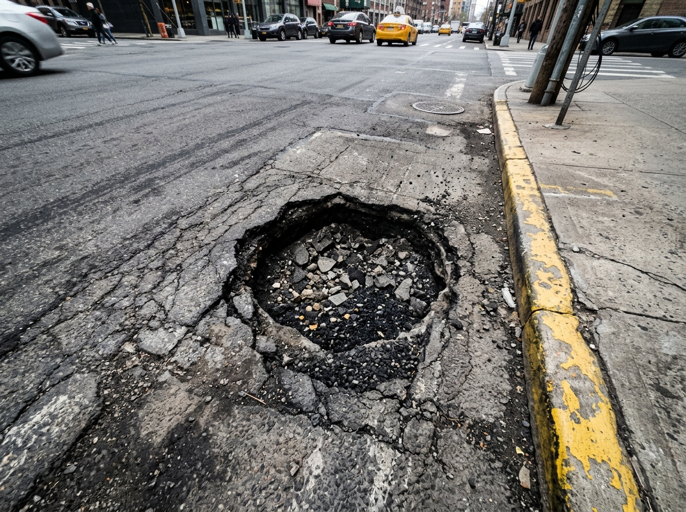
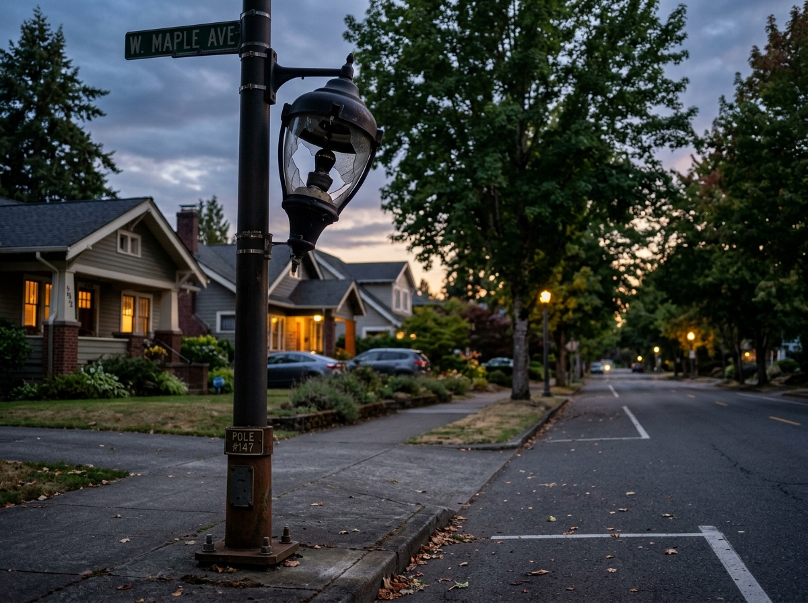
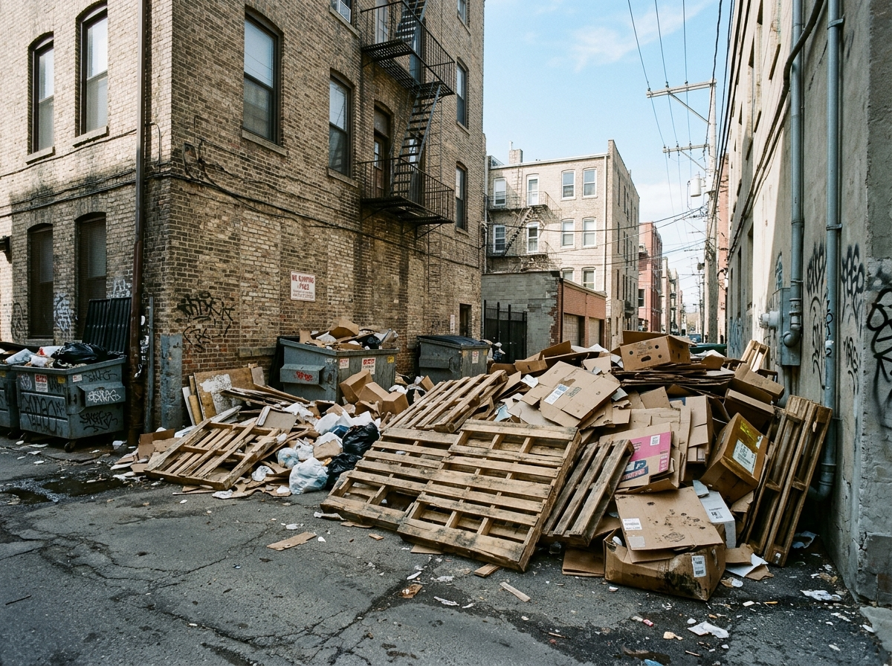

Public Incident Registry
Community Reports & Fixes
Open incident feed in Jakarta and surrounding urban regions. Public visitors may browse; sign in to interact.
All Issues (6)
Sanitation & Waste

PAM clean drinking water pipeline burst flooding sidewalk in front of Cipete Raya MRT

Severe 15cm asphalt cavity in TransJakarta corridor causing motorbike rim damage

Complete PJU streetlight outage spanning 300 meters along residential corridor

Illegal household trash accumulation obstructing drainage at Kali Krukut Kemang

Hazardous decayed Trembesi tree limb at risk of collapse over walking path
Heavy excavation equipment operating past 22:00 WIB in residential alley